I’ve been in Europe for almost a month now, and it’s still hard to believe I’m actually here! Learning about European history and art in high school, I didn’t connect much to it because I wasn’t going to Europe anytime soon. But it is easy to lose that initial enthusiasm you feel when you’re about to embark on an adventure to a place you’ve only read and heard about. After traveling and sightseeing for days on end, it’s easy to become indifferent and forget that you are experiencing thousands of years of history and new and exciting cultures and places. Going on to my next adventure at Oxford has rekindled my excitement and I’m looking forward to what is to come. My [really long] summer is coming to an end and I’m still in summer mode, but I’m ready to get back into academic mode. My main concern right now is that the next two months will pass by too quickly and I won’t have time to really assimilate into the culture and get to know new people.
Sunday, October 1, 2017
Moving In to St Catz
The cold wind blew across my face and through my denim jacket as I walked to the train station in Copenhagen at 4:30am. I stood outside shivering for 10 minutes before the train to the airport finally arrived. It was only 6, but suddenly I was very hungry and bought a mushroom omelet for 70 Kroner. The one-hour flight to London went smoothly. Went through customs and was soon on the national express from the airport to Victoria coach station, then boarded the Oxford Tube. The bus drove by the Marble Arch, a 19th c. white marble triumphal arch designed by John Nash in 1827 to be the state entrance to the cour d’honneur (ceremonial courtyard) of Buckingham Palace. Today there was some demonstration in front of it, and a man singing nonstop in a tribal voice, in a language unknown to me.
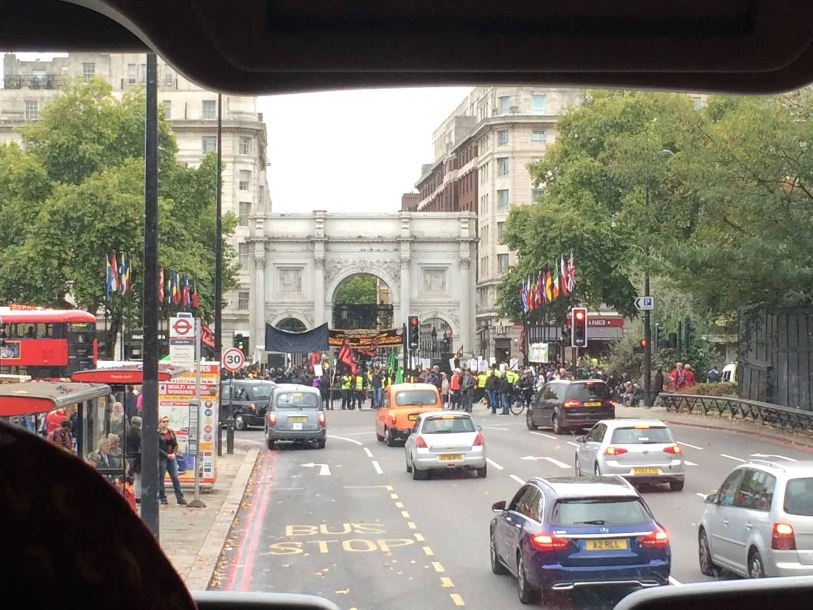
It was cloudy and drizzling, as expected. The Oxford Tube drove on a 4-lane highway surrounded by trees and green, some yellow and orange due to fall, some cows, rolling hills and land used for farming and grazing. I was feeling a little nervous, thinking about the totally unfamiliar environment I would soon be in and having to make friends, hoping I’ll find people who I click with.
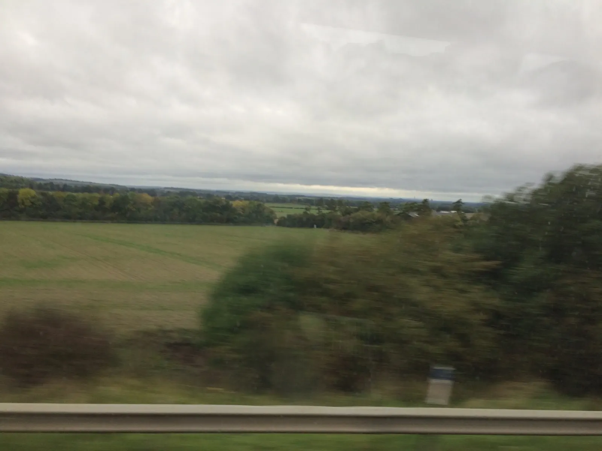
The bus took us through the town of Oxford, past brick buildings, buildings painted ocean blue and pink and white and tan, restaurants serving cuttlefish, fish and chips, Asian cuisine, and ales, a Waitrose gas station. Past St Clements Street, Brooke College, a Sainsbury’s grocery store, a river, a soccer field, modern and ancient looking buildings, a rose garden, a dome tower. It reminded me of the Wellesley Ville except it was much bigger and with a greater variety of buildings and shops.
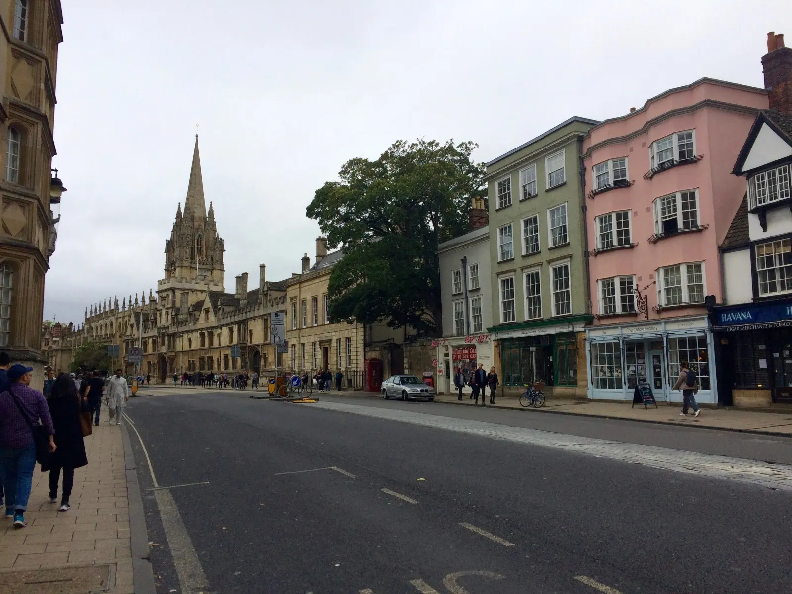
Got off at Queens stop, and after a 5-10 minute walk from High Street I was at St Catherine’s College!
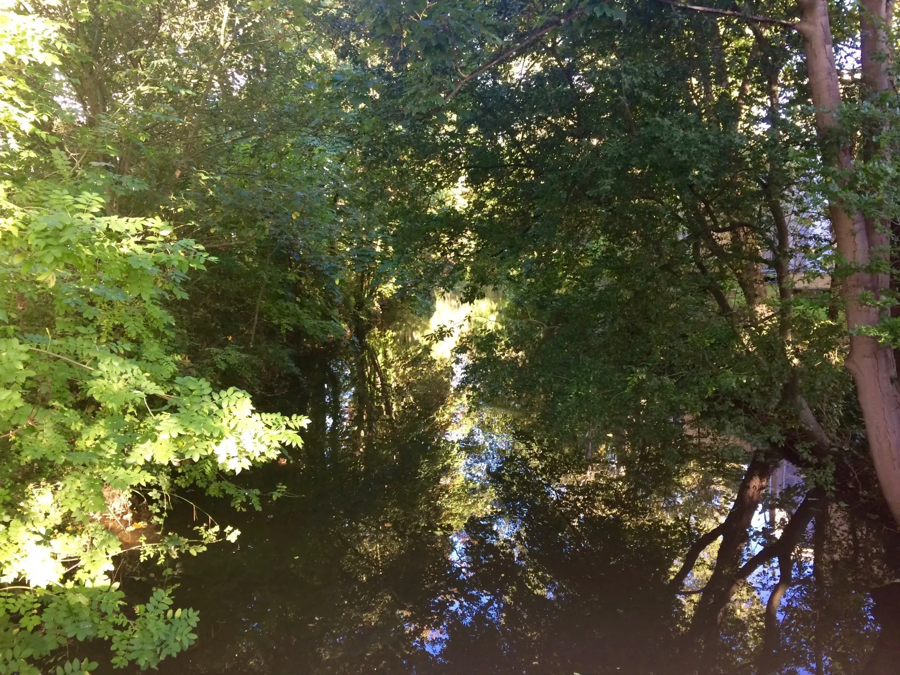
Tucked away in Manor Road away from the city centre and the city noise, the campus feels more spacious than the other colleges stuck next to each other in the main street. Founded in 1962, St Catz is Oxford’s newest and largest college, with the largest undergraduate population and about 50 visiting students this term. It is known for its modern feel and friendly, relaxed, and sporty atmosphere. It is also right next to the social science library, which was super great for me and all the other social science students at Catz, and anyone who needed a change from the St Catz library.
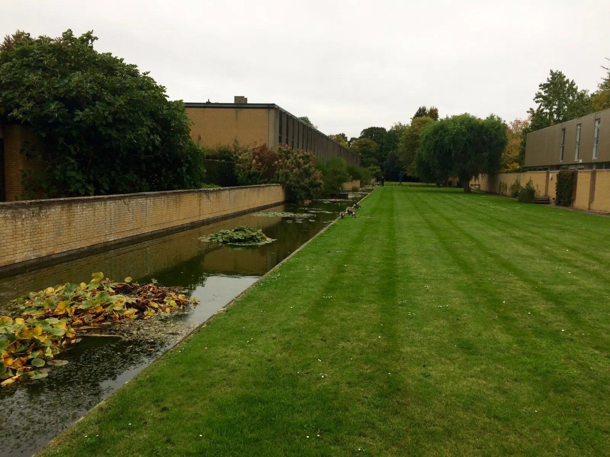
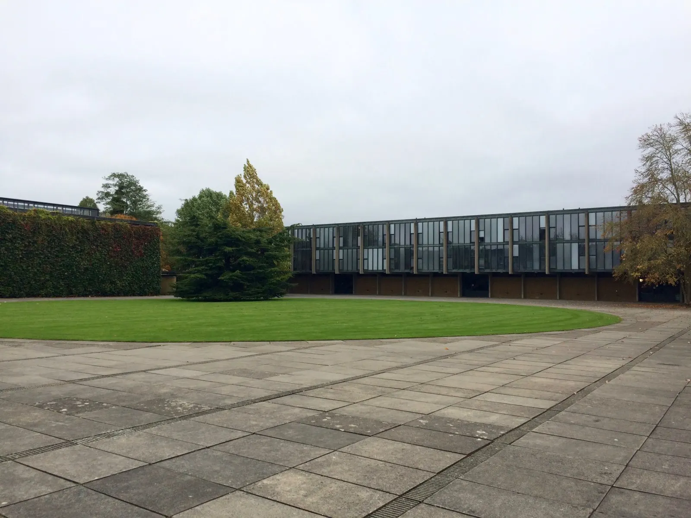
A friendly second year showed me to my room building; I had a hard time understanding his British accent. I was staying in staircase 12 on the 2nd floor. My dorm was a twin room; we had our own bathroom, and there was a small kitchen on our floor. I soon found out every (actual) student at Oxford has a single, which is really nice; I guess they want visiting students to get to know each other. I put my luggage down and went to Boots (the CVS here) to buy shampoo and hand soap. I walked by students, wondering whether I should say hi. Many were with family or friends.
I would get to know High Street well—the main street lined with colleges and interspersed with shops and houses, mainly student accommodation. I had my first meal at the High Street Cafe.
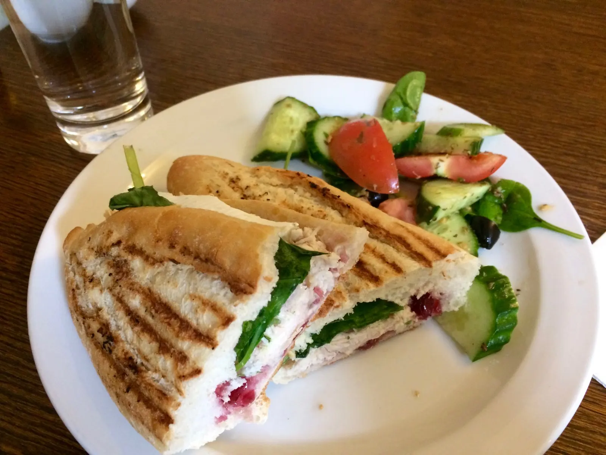
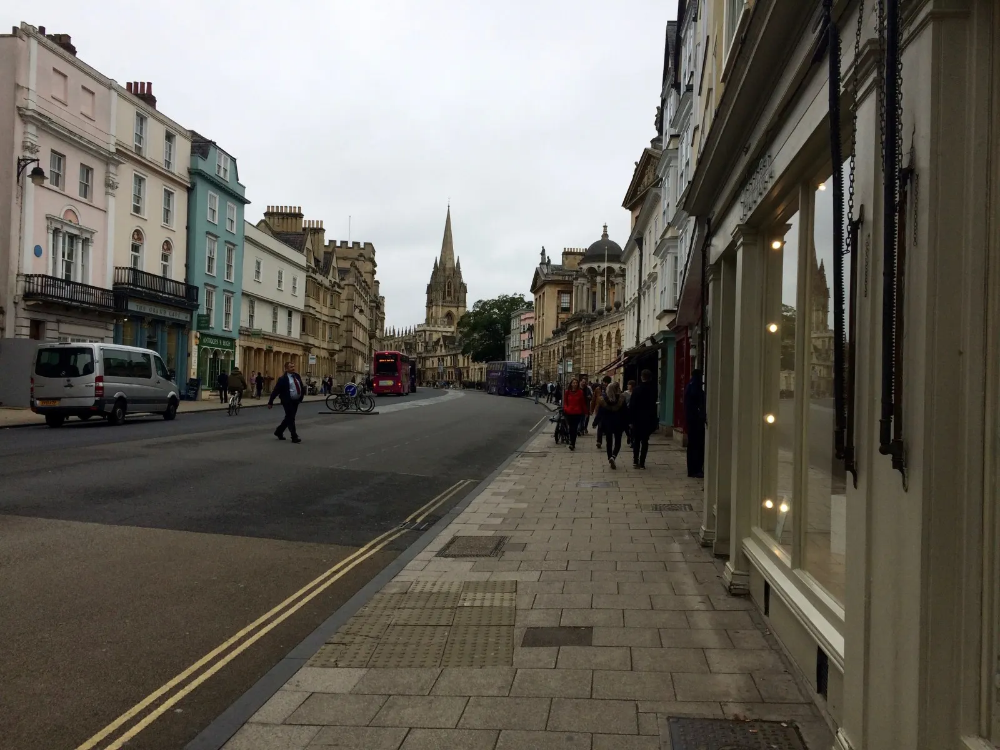
I walked by Queen’s College, University College (the oldest college foundation in Oxford and one of the 3 oldest colleges; founded 1249; also where Bill Clinton and Stephen Hawking have studied), the Examination School (where students attend lectures and take final exams in their formal black robes), a low domed building—a memorial to poet Percy Shelley who was expelled from University College in 1811 for writing The Necessity of Atheism. I also saw a memorial in front of a site where Robert Boyle once lived and discovered Boyle’s Law.
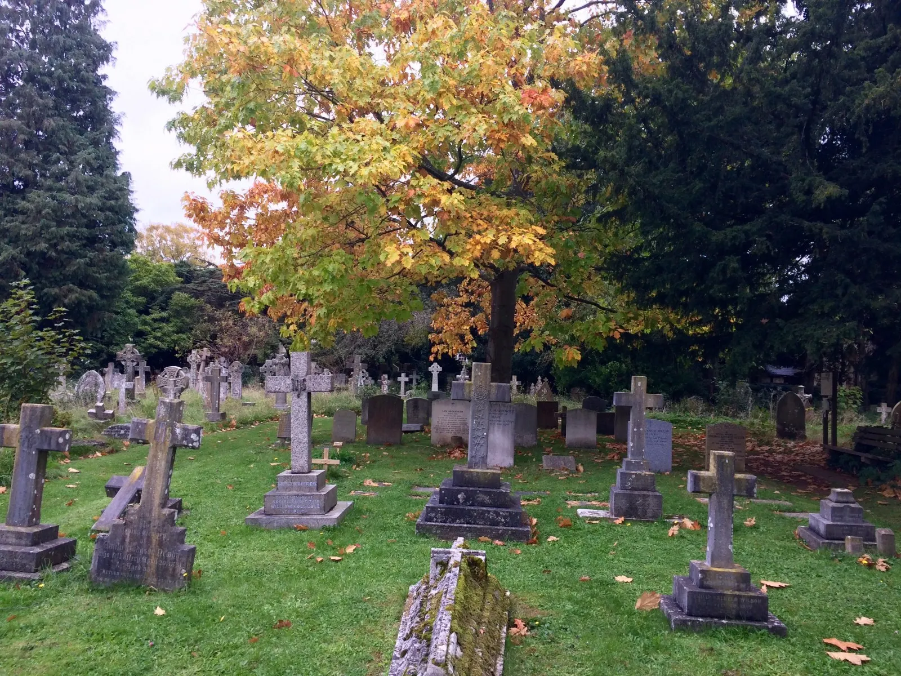
Since my fall/winter clothes were still being shipped from home, I decided on a whim to get an Oxford sweatshirt. Like many decisions I’ve made, I made this one too fast—I bought a navy blue one for 22 pounds and then saw them selling for 17 down the street. The cashier was super friendly though and we had a little conversation. We probably would’ve talked more, except he had to deal with another customer; in his haste he gave me a keychain before I left.
I stopped by the Holywell Cemetery just outside campus, thinking it might lead to a shortcut to campus. It didn’t. But I had a peaceful time of reflection and feeling thankful for being alive and in the beautiful town of Oxford.
Sat in my room and was working on my blog when the fire alarm went off—someone screwed up with popcorn in the kitchen. This gave me the opportunity to meet some of the second and third years in my staircase. I learned about the Oxford education system, which is quite different from the American system (many study for 3 years rather than 4 depending on the subject you study, the final exam at the end of the 3 years is the only thing that shows on your degree certificate, and if you fail the exam at the end of the first year you’re kicked out of Oxford).
At 7pm I went to the JCR (Junior Common Room, which refers to both the undergraduate student body and the room where we meet to hang out) for pizza and got to know a bunch of people whose names I forgot right after, both visiting students and full time, matriculated students. What struck me right away was how friendly everyone was. A group of us went to the pub—my first pub! I wasn’t in the mood for beer but had a cup of ice cream with fruit. It was really fun—lots of introductions but interesting conversations too.
Monday, October 2, 2017
Orientation and Oxford tour. Am I dreaming??
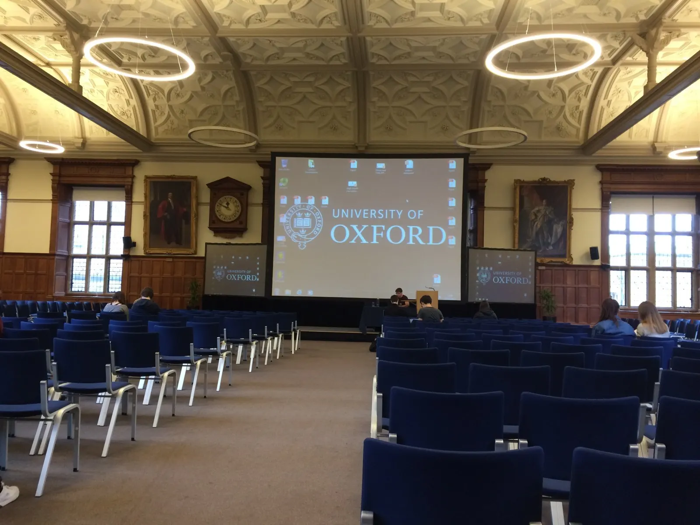
The Dean of the college welcomed us at the Exam School and emphasized how our differences are what bring energy to Oxford. She addressed EU citizens’ concerns on how they might be treated (given Britain’s vote to leave the EU) and expressed her commitment to keeping a good relationship, noting that 15% voted to remain and that that percentage is probably higher in university. She urged us to throw ourselves into the experience and talked about how we will learn just as much in class as in conversation with each other. The purpose of dining is not just to eat but also to exchange ideas, and learning is social and pervasive, she said. She encouraged us to go to special lectures and reminded us not to use mind altering substances (other than learning).
I met with Helen, the Visiting Student Administrator, afterwards. I found it strange when after saying thank you, she would respond with “don’t worry” or “it’s all right.” Maybe it’s a British thing.
Lunch in the dining hall (aka canteen): St Catz has one large dining hall; we wait in line with trays, pay per item with preloaded card, and sit in long rows of tables.
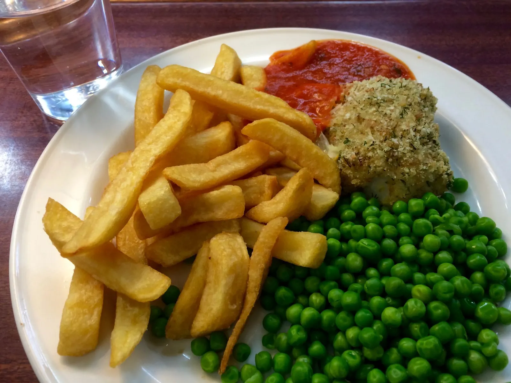
I realized how much I missed the dining hall’s ready-made, yummy food. Plus it’s subsidized, so it’s about half as expensive as eating out in Oxford, which is nice. Needless to say, I’ll be seeing a lot of peas and chips over the next two months.
I wanted to do a Harry Potter tour (scenes were filmed in New College, Bodleian Library, and Duke Humfrey’s library), so I did the Oxford Walking Tour w/ Odelia, who I met at lunch. It wasn’t the tour I was looking for; it wasn’t even about Harry Potter. But I learned a few things about Oxford’s history which was cool and made me feel like I was in a dream…
- Saw Trinity Church, an aristocratic college with a highly ornate chapel where founder William Pope was buried with his two wives. The inward facing seats create a sense of community.
- Balliol College (pronounced “bailier”), where Adam Smith attended, is known for politics and the politicians it has produced.
- Conflicts between the city and university (town vs gown).
- We went inside the new Bodleian (Weston) Library, which contains 13 million books and manuscripts—all books published in England are sent here by law. They excavated the underground for bookshelves, and there is a tunnel with a train to deliver books across to various colleges. There was a collection of documents including the Magna Carta (chewed by mice), Shakespeare’s first folio, or published collection, and Tolkien’s letters to his children at Christmas as Father Christmas. I learned that Tolkien (who went to Exeter College) and CS Lewis were professors at Oxford!
- Wadham College: Monastic model of staircases rather than corridors, has produced 27 prime ministers. Male-only until 19th c.
- Radcliffe Camera: first circular library in Britain
- All Souls College: known for “the hardest exam in the world”—used to have an exam where you would write an essay based on a one-word prompt. And to make things even more difficult, they have about 12 grad students total
- Four Candles: a pub with a pun (fork handles)
- Turf Tavern: infamously known for English ale and lots of drinking, smoking and gambling
I met my roommate Sophia that afternoon! She immediately struck me as a very cheery, outgoing and friendly person.
Tonight was Pub Crawl at Turf Tavern (yes, the one the tour guide mentioned), which was packed like yesterday’s pub. I met freshers as well as second-year students. We had interesting discussions about Harvard vs. Oxford (they said they would choose Harvard over Oxford, we Americans disagreed), math interview questions, how stressful Oxford is. I tried a sip of my roommate’s pint of beer—it tasted like a mix of urine and apple juice. Went back to Catz and played a never-ending game of pool.
Tuesday, October 3, 2017
The Brits are quite interesting people
Met some freshers and visiting students at breakfast. Every morning I got to choose from a range of English breakfast items that I never got tired of: egg (scrambled, poached, or boiled—which consists of a soft egg in a little scoop dish that you eat with a spoon), sausage, bacon, porridge, grilled mushroom, croissant, tomato, beans, so many options!
Met with Naomi, Director of Studies for Visiting Students, who told me about her exciting research in human ecology. It was clear how passionate she was about her research. She told me that while studying at St Catz, she learned 10 things a day, and now as a professor, she learns 5 things a day.
Today I learned what quid means!
An hour later I was already hungry and looking forward to lunch…I wasn’t working out so must be from all the socializing. Lunch was lamb kabobs, rice, and broccoli. The nice thing about lunch being served in a small 45-min window is that everyone goes at that time, so the hall is full of merry voices and conversation.
Afternoon tea at 3: tea with cookies, cakes, lemon bars, fruit bars and brownies, and lots of socializing—did the usual introductions (year, school, where you’re from) but also discussed things like our tutorials and Brexit.
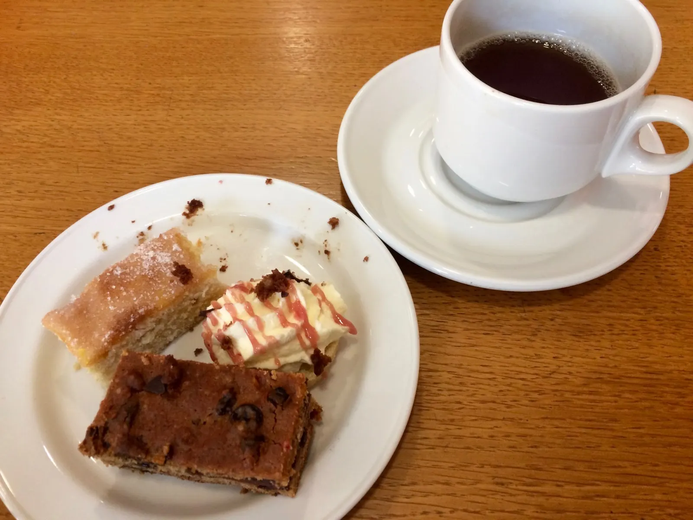
Met our College Families, a Catz tradition where second years “marry” and have “children” (freshers). We had a family dinner at Pizza Hut a short walk away—out of all the restaurants in Oxford, they chose Pizza Hut?? But it turned out not to be a fast food restaurant but a nicer dine-in restaurant. At first I felt left out because everyone in my family was British, but as the term went on, I would grow closer to my new family.
Walked back in the cool night air through the streets back to the JCR. There were staircase parties that night (which was an exception for freshers’ week, as staircase parties are usually not allowed). Tried a lemonade drink with sugar that barely tasted like alcohol. It bubbled in my stomach.
People taught me some British swear words (including one they said never to use—don’t worry I don’t remember it anymore). I met someone who voted in favor of Brexit—the first person I met who favored leaving the EU—and was interesting to hear his opinion. When another person I met pulled out a cigarette and started smoking, I asked if he was scared he was going to get lung cancer. He said yea, a little bit, but I’ve tried to quit and wasn’t able to. You should be feeling bad for me, he added. I didn’t know what to say to that.
Hung out for a bit in the JCR, where everyone was chilling. Jake and Sam, whom I had met last night at Pub Crawl, mentioned that Brits are boring. I was quite surprised at this and exclaimed, “But you guys are some of the most interesting people I have ever met!” Jake was so touched by this that he gave me a hug.
They went to club night afterwards and I went back to my room. But I stayed up until 2am talking with Sophia about travel plans and British clubs.
Where is the day going?? I felt that I could spend all day in the library alone. The days have been really long yet go by really fast; I have a paper and book review due next Tuesday but haven’t gotten around to them yet, as there’s always something going on and I can’t work at night like I usually would because nighttime is socializing time. It’s tiring but so much fun.
Since I’ve arrived at Oxford I’ve fallen in love with the charming town—the streets and shops, the old-fashioned and the modern buildings, the history, the friendly people. I love St Catz so much right now and still feel like I’m in a dream. I don’t even want to travel around Europe much during term like I had initially planned; I just want to stay here and immerse myself in books and the culture and get to know the students who are so friendly, intelligent, humble, and just plain cool.
Wednesday, October 4, 2017
So many books, so little time
The days are short but the week feels long—Sunday felt like such a long time ago.
Brunch: crumpets with butter and jam and Nutella, biscuits (aka cookies)
Went to the St. Catz library to check out books for my tutorials—so many books! Went to the politics and international relations section and checked out 6 books, some from the reading list—books on international relations, rising powers, British economy, British and America, International Relations theory with the Third World. I want to learn more about topics dealing with British policy and relations and developing countries, and really hope to learn about international relations and economics from a European/British/non-American perspective while I’m here.
Lunch: there was a super long line today since everyone is now here. Had a big slice of chicken ham goat cheese pizza and green beans.
Then headed over to the Fresher’s Fair, which is like club rush at Wellesley except a lot more clubs and a lot more people. I signed up for anything and everything that caught my attention, from AI gaming and Oxford Women in Business to the Environmental Sustainability organization and UNICEF to flying a plane and cave exploring. It was crowded and full of people. Free cheese balls were a highlight.
St Catz served a Visiting Students dinner for us tonight, complete with wine glasses and china dishware. I met some more visiting students and we talked about natural disasters, U.S. gun policy (apparently it’s a hot topic all the way in Norway), the Ukraine. We sat there talking until Naomi banged a fork on a glass to get our attention and said the ladies serving us probably want to go home now, so we all migrated to the JCR and college bar. I grabbed a cup of tea on the way out. In the JCR the conversation continued—I had interesting, delightful conversation comparing our different cultures in everything from our accents to college tuition to how people respond to “How are you?” We talked about how fascinating and prevalent math can be (I had never heard of the Golden Ratio before today, and I learned that in rock paper scissors, people tend to pick the one that hasn’t come up in a while), and about the various subjects we were all studying. This is what I love most about St Catz so far—the interesting, intellectual, non-superficial conversations I am having with people who come from all sorts of different and wonderful places. I love learning about other countries and cultures and sharing my own, and I love that these conversations happen all the time, whether in meals or at the pub all night. I could be in a room for hours with these people and never get bored.
Thursday, October 5, 2017
Things I learned today; a night at the club
Breakfast: bagels with Nutella and butter in the JCR. Met some more freshers.
Lunch: While waiting in line, I looked around. Everyone was talking, no one was on their phones, and definitely no one does homework while eating, partly because they kick you out in 45 minutes but mainly because eating is as much a social activity as it is a nourishing activity. I learned that tomatoes and potatoes are originally from Bolivia and Peru, and observed that many people here eat food, including rice, with their fork tines down.
Finally started background reading for my tutorial subjects—papers due Tuesday and Wednesday (yikes).
Went on a walk to explore a little of Oxford with Sophia and Pam:
St Mary’s Church
Dinner: Went to my first Hall tonight, where you are served a 3-course meal. The hall is in a Harry Potter format—long tables with a high table in the front where the important people sit (as you can see my days tend to revolve around food). Unlike other colleges, we don’t have to wear a gown or dress formal, but we still keep part of the tradition: everyone stands up as the [important] people walk in (we’re supposed to stay silent but this rule is not always followed) and stand by their seat at the high table, wait until someone from the high table bangs a gavel on the table and says a short Latin grace, then sits down, talking excitedly. And then they bring out the food: appetizer, entree, dessert.

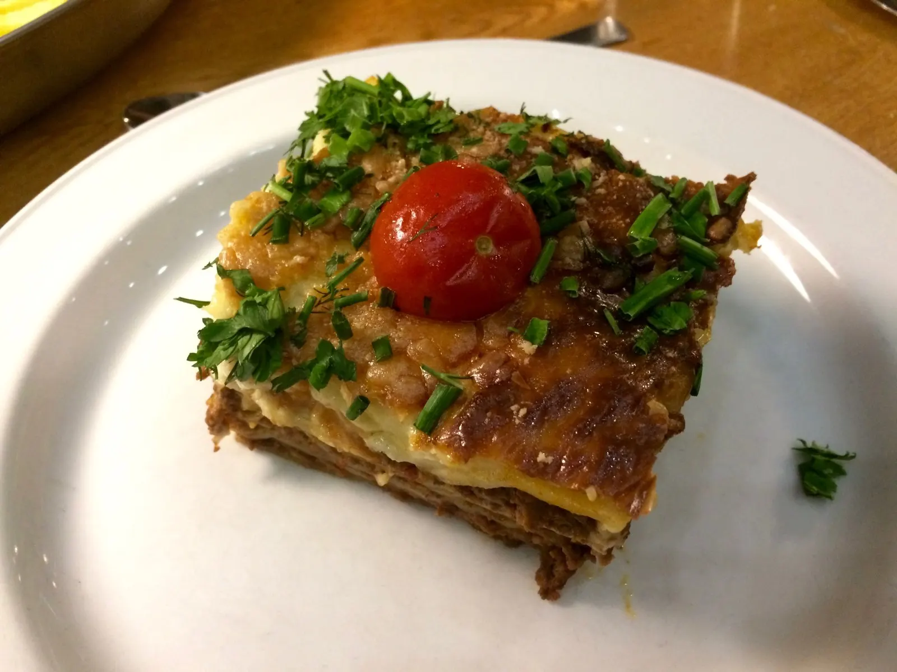

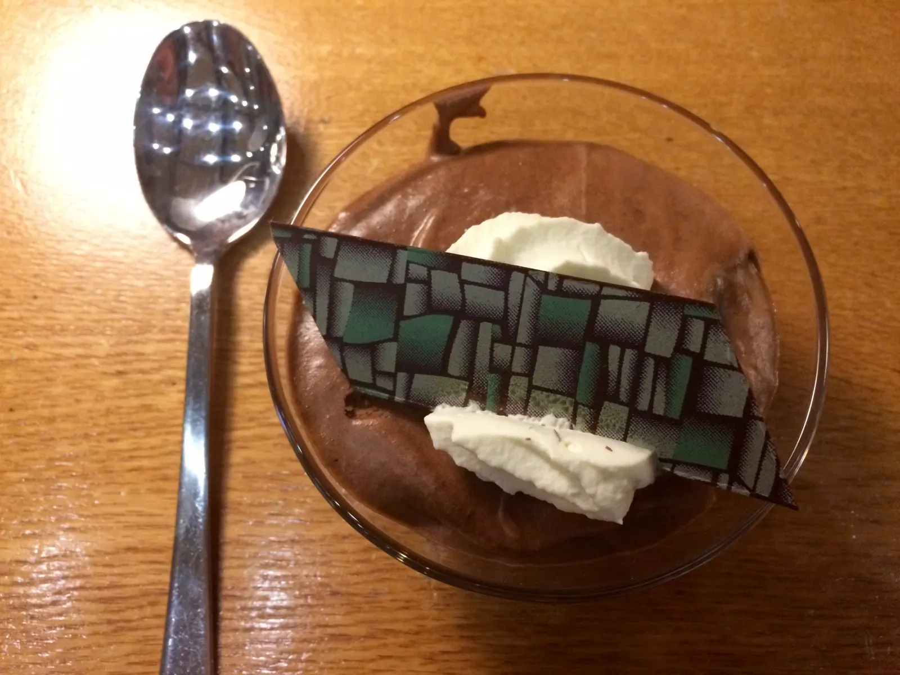
At 10:30 a group of us went to the Fever club, with disco balls and a dance floor with bright flashing lights and a bar. It was crowded with students, and people around me went all out. I was dancing right next to the speaker and left the club with deaf ears. I didn’t have as much fun as the others because I don’t really dance and definitely didn’t go all out. You don’t seem to enjoy clubbing, someone observed. I replied that I wasn’t drunk enough. But I don’t think alcohol would’ve made much of a difference. I went to bed at 3am—I’ve never been up this late at Wellesley!
Random observation: I’m starting to think in a British accent now, even though I’m not anywhere near the point where I can even remotely imitate it.
Friday, October 6, 2017
Sleep is for the non-party-ers
Woke up to a view of Canadian geese outside my window by the pond. Where do they go during the day? I wonder every time I walk by the pond.
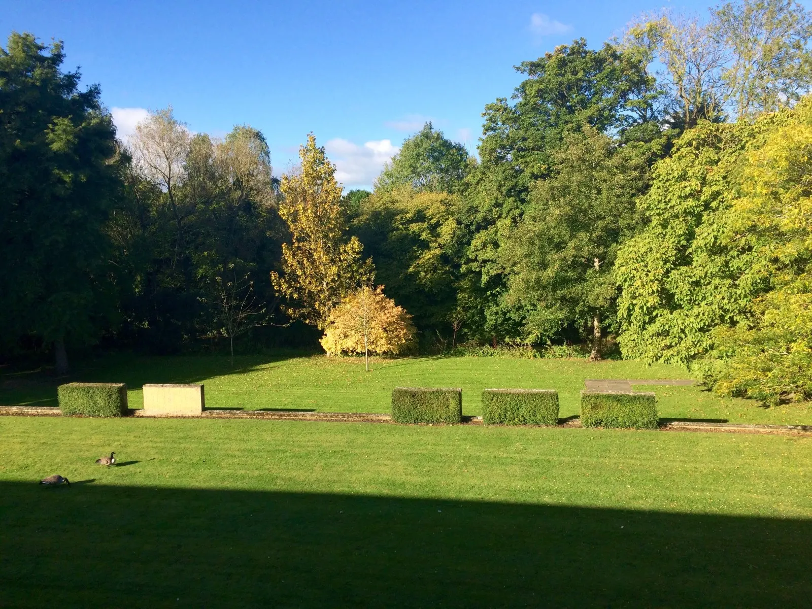
After a week of zero exercise, I finally went running today in the nearby University Parks; it was a beautiful setting to run in.
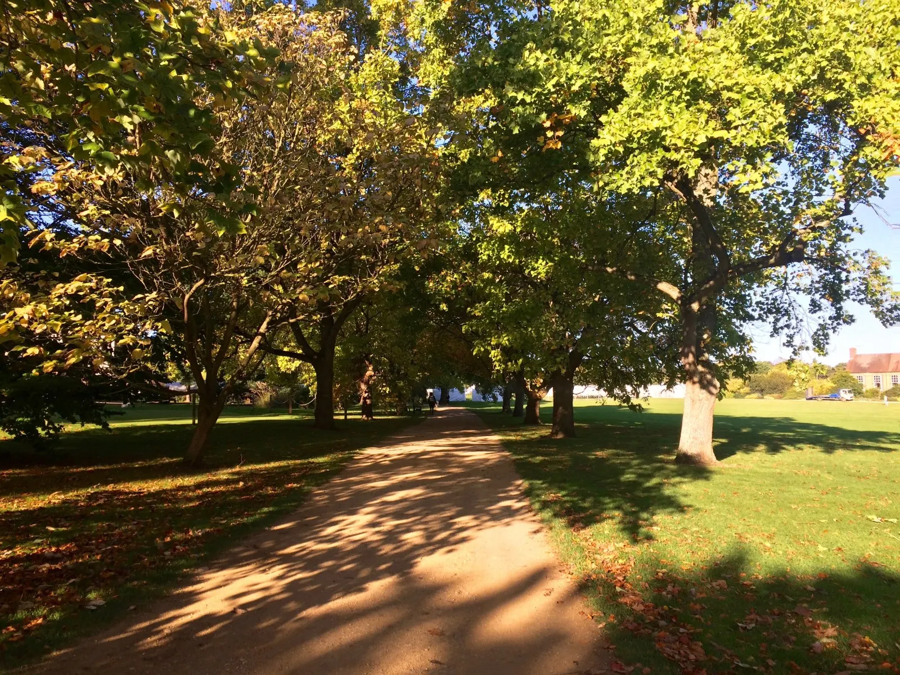
Had chocolate chip cookies for breakfast because I was too lazy to go out and get food.
Started the readings. Problem is, I start reading the book rather than trying to filter out what’s relevant for my paper, and as a result, it takes way too long.
Lunch: met a fourth year in line, who talked about how tutors go easy on you for the first essay and don’t expect it to be amazing, about how at Oxford they don’t teach it to you until after you’ve done it (like a swim instructor throwing you into the deep end of the pool).
Nap. I woke up very groggy and returned to my readings, which consist of zero textbooks, only scholarly books and articles, which I like.
Dinner: formal hall. Ran into Clara and Phoebe from Hong Kong and we had fun conversation on London, travel, and Oxford life. Travel is a common topic here and I want to travel, but it will be a struggle given our academic workload.
Saturday, October 7, 2017
Tennis and shopping
Tennis tryouts at the University courts (20 minute walk from Catz): it had drizzled in the morning so the courts were slippery, and with my vulnerable ankle, I didn’t move much. But it felt good to hit balls, and my left arm was sore by the end. I was hoping to be able to play on grass while here, but sadly they are only open in the summertime. Met two first years from Mumbai, and we talked about British vs. American culture while walking back, how American schools place more emphasis on sports and are more informal and casual (no served food), whereas in Britain, people tend to be more formal and courteous, and schools couldn’t care less that one is an Olympian.
Lunch: I like taking pics of my food haha
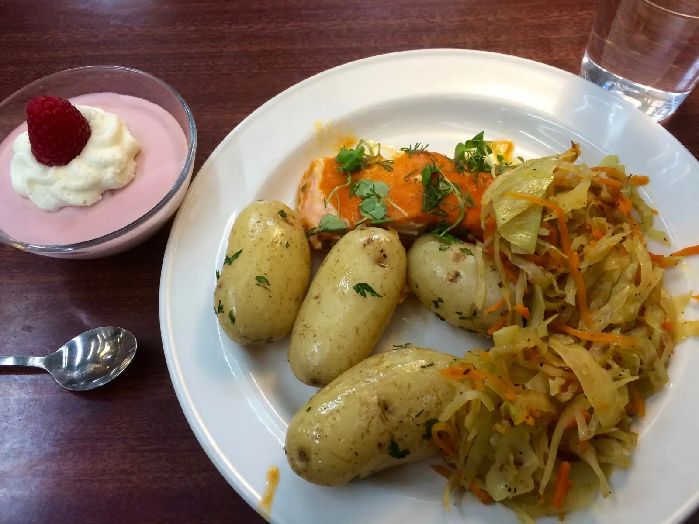
Trip to the costume shop with Becca, Bobby, and Nick, which was full of students, probably in preparation for tonight’s Entz (a bop, or a college party).
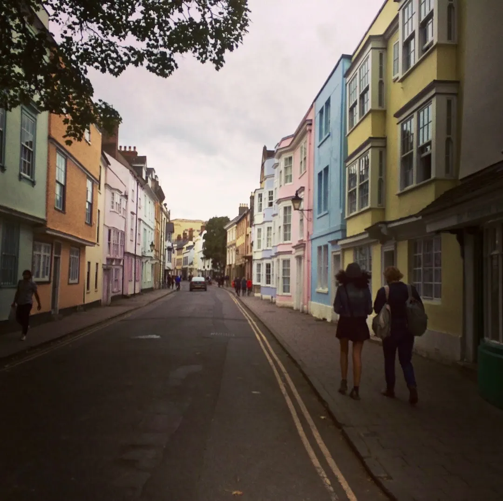
Dinner: roast chicken + peas and corn + soup with bread + meringue = super full
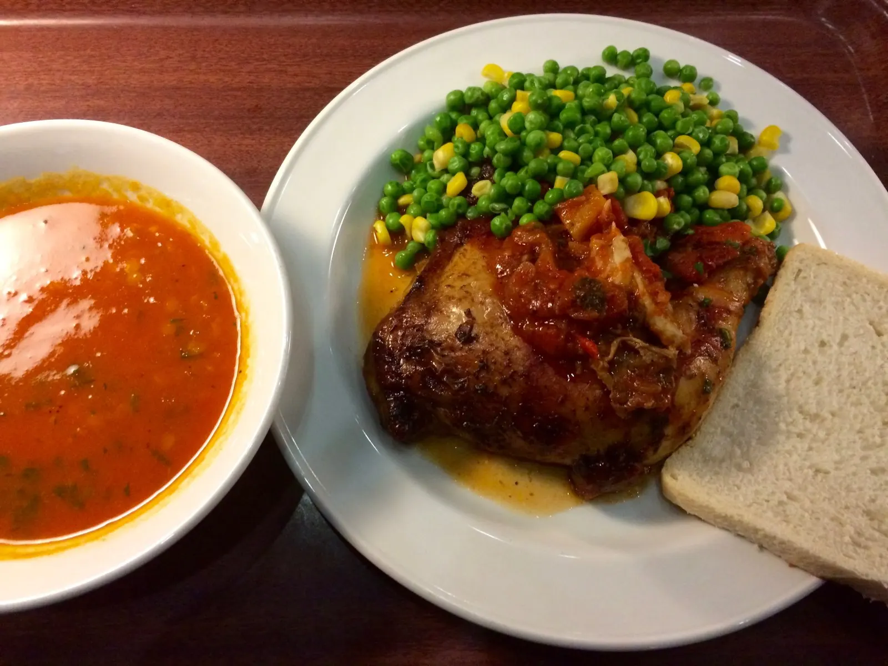
Name Game Entz: SO. MUCH. FUN. The game is to dress up as someone/something that begins with the first letter of your name. I wore a tennis outfit and went as a jock, which apparently is a very American word that many people had never heard of. Most guessed jogger. I love how people went all out, dressing up as everything from a skeleton to a cereal box to ice cream.
Most took the time to introduce themselves and I was able to meet and talk to a lot of new people, mostly matriculated students. There was a bar and dance room, but the Entz is fun because everyone is there and I like jumping around between groups—I had a long conversation with someone from Bulgaria, and learned that a jumper is not overalls (which are dungarees) but a sweatshirt. Also met a couple British people who actually like the American accent—something that doesn’t seem very common!